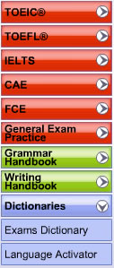

Note: in this Mac app the Coach lives in the Exams Coach menu — browse 762 topics with their words, and open the exam guides below. What follows describes the original CD-ROM screens.

The Longman Exams Coach contains guides and practice exercises for the following exams:There is also a General Exam Practice section
The Grammar Handbook contains a Grammar Guide and Grammar Exercises.
The Writing Handbook contains the following sections:
Access the different sections using the buttons to the left of the screen.
Open Exams Coach to study these words by topic.